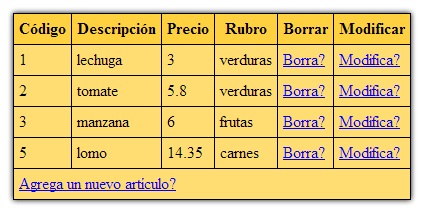

Ahora implementaremos una serie de páginas para administrar la tabla artículos (ABM = Altas Bajas y Modificaciones). Mostraremos en una tabla HTML todos los registros de articulos y un hipervínculo para borrar y otro para modificar los datos.
En la parte inferior dispondremos un hipervínculo para agregar artículos.
Básicamente lo nuevo es este panel de administración ya que en conceptos anteriores analizamos en forma individual como se efectúa el alta, la baja de registros y la modificación de datos.
La primer página a implementar es la de mantenimientoarticulos.php y su interfaz visual será similar a esta:
El código de esta página es el siguiente:
<!doctype html>
<html>
<head>
<title>Listado de artículos</title>
<style>
.tablalistado {
border-collapse: collapse;
box-shadow: 0px 0px 8px #000;
margin:20px;
}
.tablalistado th{
border: 1px solid #000;
padding: 5px;
background-color:#ffd040;
}
.tablalistado td{
border: 1px solid #000;
padding: 5px;
background-color:#ffdd73;
}
</style>
</head>
<body>
<?php
$mysql=new mysqli("localhost","root","","base1");
if ($mysql->connect_error)
die("Problemas con la conexión a la base de datos");
$registros=$mysql->query("select ar.codigo as codigoart,
ar.descripcion as descripcionart,
precio,
ru.descripcion as descripcionrub
from articulos as ar
inner join rubros as ru on ru.codigo=ar.codigorubro") or
die($mysql->error);
echo '<table class="tablalistado">';
echo '<tr><th>Código</th><th>Descripción</th><th>Precio</th>
<th>Rubro</th><th>Borrar</th><th>Modificar</th></tr>';
while ($reg=$registros->fetch_array())
{
echo '<tr>';
echo '<td>';
echo $reg['codigoart'];
echo '</td>';
echo '<td>';
echo $reg['descripcionart'];
echo '</td>';
echo '<td>';
echo $reg['precio'];
echo '</td>';
echo '<td>';
echo $reg['descripcionrub'];
echo '</td>';
echo '<td>';
echo '<a href="bajaarticulo.php?codigo='.$reg['codigoart'].'">Borra?</a>';
echo '</td>';
echo '<td>';
echo '<a href="modificacionarticulo1.php?codigo='.$reg['codigoart'].'">Modifica?</a>';
echo '</td>';
echo '</tr>';
}
echo '<tr><td colspan="6">';
echo '<a href="altaarticulo1.php">Agrega un nuevo artículo?</a>';
echo '</td></tr>';
echo '<table>';
$mysql->close();
?>
</body>
</html>
Como podemos ver hemos agregado dos columnas en la tabla como diferencia con el concepto de listado que habíamos analizado.
La columna Borrar tiene por objetivo llamar a la página bajaarticulo.php pasando como parámetro el código de artículo que queremos borrar. Como podemos luego probar cuando pasamos la flecha del mouse sobre cada enlace "Borra?" veremos que el parámetro codigo es distinto para cada artículo.
Lo mismo hacemos para llamar a la página modificacionarticulo1.php donde también tenemos que enviar el código de artículo que queremos modificar. La única diferencia con lo que habíamos visto anteriormente es que el código de artículo anteriormente se cargaba por teclado y ahora ya está inserto en cada hipervínculo.
Veamos ahora la página bajaarticulo.php, esta tiene por objetivo eliminar el articulo, el código fuente de esta página es:
<?php
$mysql=new mysqli("localhost","root","","base1");
if ($mysql->connect_error)
die("Problemas con la conexión a la base de datos");
$mysql->query("delete from articulos where codigo=$_REQUEST[codigo]") or
die($mysql->error);
$mysql->close();
header('Location:mantenimientoarticulos.php');
?>
?>
Como podemos ver hemos implementado una página PHP pura, es decir no hay salida HTML. En esta página procedemos a borrar el registro de la tabla articulos teniendo en cuenta el codigo que llega como parámetro y lo recuperamos del vector asociativo $_REQUEST.
Luego de borrado procedemos a redireccionar a la pagina de mantenimientoarticulos.php la cual se refresca en pantalla en el navegador y vemos que no se encuentra el artículo que habíamos seleccionado previamente para borrar.
Las páginas para la modificación de articulos son:
<!doctype html>
<html>
<head>
<title>Modificación de artículo.</title>
</head>
<body>
<?php
$mysql=new mysqli("localhost","root","","base1");
if ($mysql->connect_error)
die("Problemas con la conexión a la base de datos");
$registro=$mysql->query("select descripcion,
precio,
codigorubro
from articulos where codigo=$_REQUEST[codigo]") or
die($mysql->error);
if ($reg=$registro->fetch_array())
{
?>
<form method="post" action="modificacionarticulo2.php">
Descripción del artículo:
<input type="text" name="descripcion" size="50" value="<?php echo $reg['descripcion']; ?>">
<br>
Precio
<input type="text" name="precio" size="10" value="<?php echo $reg['precio']; ?>">
<br>
Rubro:
<select name="codigorubro">
<?php
$registros2=$mysql->query("select codigo,descripcion from rubros") or
die($mysql->error);
while ($reg2=$registros2->fetch_array())
{
if ($reg2['codigo']==$reg['codigorubro'])
echo "<option value=\"".$reg2['codigo']."\" selected>".$reg2['descripcion']."</option>";
else
echo "<option value=\"".$reg2['codigo']."\">".$reg2['descripcion']."</option>";
}
?>
</select>
<input type="hidden" name="codigo" value="<?php echo $_REQUEST['codigo']; ?>">
<br>
<input type="submit" value="Confirmar">
</form>
<?php
}
else
echo 'No existe un artículo con dicho código';
$mysql->close();
?>
</body>
</html>
El algoritmo de esta página ya lo analizamos cuando vimos la modificación de datos trabajando con más de una tabla de MySQL.
Cuando termina de modificar los datos en pantalla el usuario se llama la página modificacionarticulo2.php donde procedemos a efectuar el update de de tabla articulos y redireccionar a la pagina principal:
<?php
$mysql=new mysqli("localhost","root","","base1");
if ($mysql->connect_error)
die("Problemas con la conexión a la base de datos");
$mysql->query("update articulos set
descripcion='$_REQUEST[descripcion]',
precio=$_REQUEST[precio],
codigorubro=$_REQUEST[codigorubro]
where codigo=$_REQUEST[codigo]") or
die($mysql->error());
$mysql->close();
header('Location:mantenimientoarticulos.php');
?>
Por último desde la página principal de mantenimientoarticulos tenemos un hipervínculo para efectuar el alta de articulos, este hipervínculo llama a la página altaarticulo1.php:
<!doctype html>
<html>
<head>
<title>Alta de artículo</title>
</head>
<body>
<form method="post" action="altaarticulo2.php">
Ingrese descripcion del artículo:
<input type="text" name="descripcion" required>
<br>
Ingrese precio:
<input type="text" name="precio" required>
<br>
Seleccione rubro:
<select name="codigorubro">
<?php
$mysql=new mysqli("localhost","root","","base1");
if ($mysql->connect_error)
die("Problemas con la conexión a la base de datos");
$registros=$mysql->query("select codigo,descripcion from rubros") or
die($mysql->error);
while ($reg=$registros->fetch_array())
{
echo "<option value=\"".$reg['codigo']."\">".$reg['descripcion']."</option>";
}
?>
</select>
<br>
<input type="submit" value="confirmar">
</form>
</body>
</html>
Finalmente la página altaarticulo2.php efectua el insert y redirecciona a la página principal:
<?php
$mysql=new mysqli("localhost","root","","base1");
if ($mysql->connect_error)
die("Problemas con la conexión a la base de datos");
$mysql->query("insert into articulos(descripcion,precio,codigorubro)
values ('$_REQUEST[descripcion]',$_REQUEST[precio],$_REQUEST[codigorubro])") or
die($mysql->error);
$mysql->close();
header('Location:mantenimientoarticulos.php');
?>
El codigo fuente de todas estas páginas las puede descargar
de aquí.